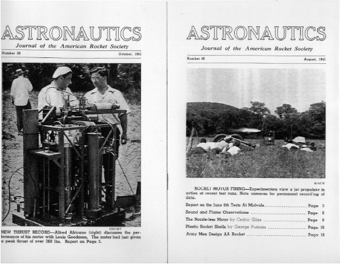

«Американское ракетное общество»
Роберт Годдард был не единственным американцем, занимавшимся в 1930-х годах созданием ракетной техники. Правда, о работах других ракетостроителей известно не так широко. Может быть, потому, что они, в отличие от Годдарда, не часто приглашали журналистов на свои испытания. А может быть, из-за того, что выбрали тупиковый на тот момент путь своей деятельности, коим являлась разработка ракет, предназначенных исключительно для научных исследований.
В те годы мир готовился к «Большой войне» и все, что не могло быть использовано на полях грядущих сражений, рассматривалось как вещь второстепенная. На проведение таких разработок давали мало денег, они в меньшей степени, чем боевые системы, интересовали широкую публику. И, тем не менее, такие работы велись. Велись во многих странах мира, в том числе и в США. И об этом не следует забывать.
В 1930 году Эдуард Пендри и Дэвид Лассер создали клуб, который объединил энтузиастов ракетной техники и космонавтики. Новая общественная организация получила наименование «Американское ракетное общество». Главной своей задачей члены «Общества» видели популяризацию идей космонавтики, поэтому очень скоро заявили о себе серией публикаций в специализированных научных изданиях. А вскоре начали выпускать издающийся и поныне альманах, который, начиная с 1957 года, выходит в виде двух ежемесячных журналов: «Реактивное движение» и «Астронавтика».
Деятельность «Общества» не ограничивалась в предвоенные годы только журналистикой. Одновременно строились модели ракет и проводились демонстрационные пуски. Что также рассматривалось как способ популяризации ракетостроения.

Один из номеров журнала, издававшегося «Американским ракетным обществом»
Первой ракетой, построенной и испытанной «Американским ракетным обществом» осенью 1932 года, стала точная копия немецкой ракеты «Репульсор». Вскоре были сконструированы еще три ракеты. Последняя из них 9 сентября 1934 года даже прошла летные испытания. Она успешно стартовала и поднялась почти вертикально вверх до высоты в 90 метров. Но дальше начались неприятности – одно из четырех сопел двигателя вышло из строя, ракета странно завиляла и ушла куда-то в сторону. Максимальная высота подъема ракеты составила 116 метров, а дальность полета – около 400 метров.
Несомненным достижением «Общества» следует признать и создание кислородно-спиртового двигателя с регенерационным охлаждением. Его сконструировал Джон Уайлд. Двигатель имел тягу в 40 килограммов и скорость истечения газов 1830 метров в секунду. Успешные испытания стали импульсом, который побудил членов «Американского ракетного общества» в 1941 году основать компанию «Риэкшн Моторс». Она стала первой в США фирмой, специализировавшейся на разработке и производстве жидкостных ракетных двигателей.
Впрочем, все достижения «Общества» не привели к повышению его авторитета в среде американских ракетчиков. В 1945 году оно потеряло самостоятельность и присоединилось к «Американскому обществу инженеров-механиков».